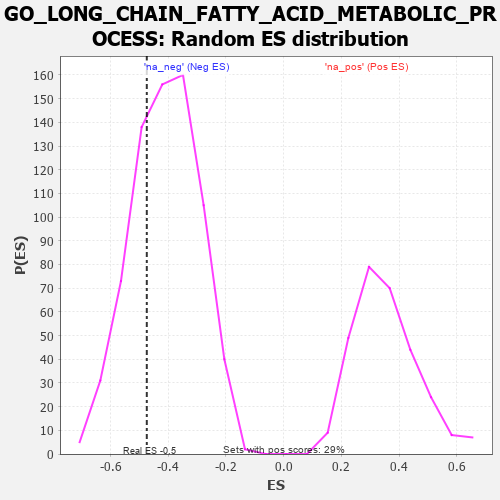

| | | Dataset | 7d |
| Phenotype | NoPhenotypeAvailable |
| Upregulated in class | na_neg |
| GeneSet | GO_LONG_CHAIN_FATTY_ACID_METABOLIC_PROCESS |
| Enrichment Score (ES) | -0.47441423 |
| Normalized Enrichment Score (NES) | -1.1549562 |
| Nominal p-value | 0.2943662 |
| FDR q-value | 0.6928774 |
| FWER p-Value | 1.0 |
Table: GSEA Results Summary
 Fig 1: Enrichment plot: GO_LONG_CHAIN_FATTY_ACID_METABOLIC_PROCESS
Fig 1: Enrichment plot: GO_LONG_CHAIN_FATTY_ACID_METABOLIC_PROCESS
Profile of the Running ES Score & Positions of GeneSet Members on the Rank Ordered List
| PROBE | GENE SYMBOL | GENE_TITLE | RANK IN GENE LIST | RANK METRIC SCORE | RUNNING ES | CORE ENRICHMENT | | 1 | GPX4 | | | 1989 | 0.306 | -0.1990 | No |
| 2 | GPX1 | | | 3109 | 0.135 | -0.3172 | No |
| 3 | FADS1 | | | 3242 | 0.114 | -0.3147 | No |
| 4 | MAPK3 | | | 3589 | 0.062 | -0.3479 | No |
| 5 | ACSL4 | | | 3632 | 0.055 | -0.3441 | No |
| 6 | ABCD1 | | | 3677 | 0.047 | -0.3418 | No |
| 7 | ACADL | | | 4360 | -0.069 | -0.4160 | No |
| 8 | ACAD9 | | | 4507 | -0.096 | -0.4184 | Yes |
| 9 | CBR1 | | | 4589 | -0.116 | -0.4093 | Yes |
| 10 | ADTRP | | | 4612 | -0.120 | -0.3921 | Yes |
| 11 | MYO5A | | | 4787 | -0.155 | -0.3881 | Yes |
| 12 | AIG1 | | | 5329 | -0.281 | -0.4094 | Yes |
| 13 | ACOT8 | | | 5364 | -0.288 | -0.3657 | Yes |
| 14 | CPT1A | | | 5467 | -0.311 | -0.3267 | Yes |
| 15 | ACSL5 | | | 6643 | -0.737 | -0.3517 | Yes |
| 16 | MGLL | | | 6842 | -0.838 | -0.2370 | Yes |
| 17 | GSTM1 | | | 7256 | -1.129 | -0.1009 | Yes |
| 18 | QKI | | | 7272 | -1.145 | 0.0879 | Yes |
Table: GSEA details [plain text format]

Fig 2: GO_LONG_CHAIN_FATTY_ACID_METABOLIC_PROCESS: Random ES distribution
Gene set null distribution of ES for GO_LONG_CHAIN_FATTY_ACID_METABOLIC_PROCESS